CODING AGENTS AS PIXEL WORLD MODELS
traex/DeepSeek-V4.1-Flash · phygen_136
点击播放 · 原生 RGB 像素
逐轮保存的候选
回放视频、检查图与代码变化。
每份候选均可单独播放。实际图片检查记录在下方工具轨迹中。
候选 01播放与检查图
点击播放 · 原生 RGB 像素

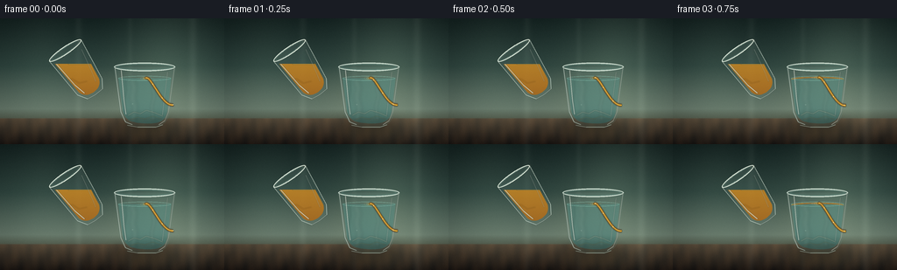
展开代码变化
--- 上一保存版本
+++ 本次保存版本
@@ -0,0 +1,703 @@
+from __future__ import annotations
+
+import math
+from pathlib import Path
+
+import numpy as np
+from PIL import Image, ImageDraw, ImageFilter
+
+from artifact_io import save
+
+
+W, H = 256, 144
+N = 20
+SCALE = 4
+WW, HH = W * SCALE, H * SCALE
+ROOT = Path(__file__).resolve().parent
+
+
+def clamp(value: float, lo: float = 0.0, hi: float = 1.0) -> float:
+ return max(lo, min(hi, value))
+
+
+def smoothstep(value: float) -> float:
+ value = clamp(value)
+ return value * value * (3.0 - 2.0 * value)
+
+
+def mix(a, b, amount):
+ return a + (b - a) * amount
+
+
+def rgba(color, alpha=255):
+ return (int(color[0]), int(color[1]), int(color[2]), int(alpha))
+
+
+def scaled_point(point):
+ return (round(point[0] * SCALE), round(point[1] * SCALE))
+
+
+def bezier(p0, p1, p2, p3, steps=24):
+ points = []
+ for i in range(steps + 1):
+ t = i / steps
+ u = 1.0 - t
+ x = u**3 * p0[0] + 3 * u**2 * t * p1[0] + 3 * u * t**2 * p2[0] + t**3 * p3[0]
+ y = u**3 * p0[1] + 3 * u**2 * t * p1[1] + 3 * u * t**2 * p2[1] + t**3 * p3[1]
+ points.append((x, y))
+ return points
+
+
+def vertical_gradient(stops, width=WW, height=HH):
+ positions = np.linspace(0.0, 1.0, height, dtype=np.float32)
+ out = np.empty((height, width, 3), dtype=np.float32)
+ for index in range(len(stops) - 1):
+ start, color_a = stops[index]
+ end, color_b = stops[index + 1]
+ mask = (positions >= start) & (positions <= end)
+ local = np.clip((positions[mask] - start) / max(end - start, 1e-6), 0, 1)
+ for channel in range(3):
+ out[mask, :, channel] = mix(float(color_a[channel]), float(color_b[channel]), local[:, None])
+ out[:] = np.clip(out, 0, 255)
+ return out
+
+
+def canvas_from_array(array):
+ return Image.fromarray(np.clip(array, 0, 255).astype(np.uint8), "RGB").convert("RGBA")
+
+
+def mask_from_draw(draw_fn, size=(WW, HH)):
+ mask = Image.new("L", size, 0)
+ draw_fn(ImageDraw.Draw(mask))
+ return mask
+
+
+def fill_mask(base, mask, color, alpha=255, blur=0.0):
+ if blur:
+ mask = mask.filter(ImageFilter.GaussianBlur(blur))
+ layer = Image.new("RGBA", base.size, rgba(color, alpha))
+ layer.putalpha(mask.point(lambda value: int(value * alpha / 255)))
+ return Image.alpha_composite(base, layer)
+
+
+def fill_gradient(base, mask, top_color, bottom_color, top_alpha=255, bottom_alpha=255):
+ grad = vertical_gradient(
+ [(0.0, top_color), (1.0, bottom_color)],
+ width=base.width,
+ height=base.height,
+ )
+ layer = canvas_from_array(grad)
+ yy = np.linspace(0, 1, base.height, dtype=np.float32)[:, None]
+ alpha = top_alpha + (bottom_alpha - top_alpha) * yy
+ alpha = np.repeat(alpha, base.width, axis=1)
+ alpha = np.clip(alpha, 0, 255).astype(np.uint8)
+ alpha_image = Image.fromarray(alpha, "L")
+ alpha_image = Image.fromarray(
+ np.minimum(np.asarray(alpha_image), np.asarray(mask)).astype(np.uint8), "L"
+ )
+ layer.putalpha(alpha_image)
+ return Image.alpha_composite(base, layer)
+
+
+def screen_blend(base, layer, opacity=1.0):
+ a = np.asarray(base.convert("RGB"), dtype=np.float32) / 255.0
+ b = np.asarray(layer.convert("RGB"), dtype=np.float32) / 255.0
+ blended = 1.0 - (1.0 - a) * (1.0 - b * opacity)
+ return Image.fromarray(np.clip(blended * 255, 0, 255).astype(np.uint8), "RGB").convert("RGBA")
+
+
+def polygon_mask(points, size=(WW, HH), blur=0.0):
+ mask = Image.new("L", size, 0)
+ draw = ImageDraw.Draw(mask)
+ draw.polygon([scaled_point(point) for point in points], fill=255)
+ if blur:
+ mask = mask.filter(ImageFilter.GaussianBlur(blur * SCALE))
+ return mask
+
+
+def ellipse_mask(center, radius, size=(WW, HH), blur=0.0):
+ mask = Image.new("L", size, 0)
+ draw = ImageDraw.Draw(mask)
+ cx, cy = scaled_point(center)
+ rx, ry = round(radius[0] * SCALE), round(radius[1] * SCALE)
+ draw.ellipse((cx - rx, cy - ry, cx + rx, cy + ry), fill=255)
+ if blur:
+ mask = mask.filter(ImageFilter.GaussianBlur(blur * SCALE))
+ return mask
+
+
+def union_masks(*masks):
+ result = np.zeros((HH, WW), dtype=np.uint8)
+ for mask in masks:
+ result = np.maximum(result, np.asarray(mask))
+ return Image.fromarray(result, "L")
+
+
+def intersect_masks(*masks):
+ result = np.full((HH, WW), 255, dtype=np.uint8)
+ for mask in masks:
+ result = np.minimum(result, np.asarray(mask))
+ return Image.fromarray(result, "L")
+
+
+def subtract_mask(mask, cut):
+ values = np.minimum(np.asarray(mask), 255 - np.asarray(cut))
+ return Image.fromarray(values.astype(np.uint8), "L")
+
+
+def draw_soft_line(layer, points, color, width, blur=0.0, alpha=255):
+ temp = Image.new("RGBA", layer.size, (0, 0, 0, 0))
+ draw = ImageDraw.Draw(temp)
+ draw.line([scaled_point(point) for point in points], fill=rgba(color, alpha), width=round(width * SCALE), joint="curve")
+ if blur:
+ temp = temp.filter(ImageFilter.GaussianBlur(blur * SCALE))
+ return Image.alpha_composite(layer, temp)
+
+
+def draw_ellipse(layer, center, radius, fill=None, outline=None, width=1, alpha=255, blur=0.0):
+ temp = Image.new("RGBA", layer.size, (0, 0, 0, 0))
+ draw = ImageDraw.Draw(temp)
+ cx, cy = scaled_point(center)
+ rx, ry = round(radius[0] * SCALE), round(radius[1] * SCALE)
+ box = (cx - rx, cy - ry, cx + rx, cy + ry)
+ fill_color = rgba(fill, alpha) if fill is not None else None
+ outline_color = rgba(outline, alpha) if outline is not None else None
+ draw.ellipse(box, fill=fill_color, outline=outline_color, width=round(width * SCALE))
+ if blur:
+ temp = temp.filter(ImageFilter.GaussianBlur(blur * SCALE))
+ return Image.alpha_composite(layer, temp)
+
+
+def cubic_ellipse_top(cx, cy, rx, ry, samples=80):
+ points = []
+ for index in range(samples + 1):
+ angle = math.pi + math.pi * index / samples
+ points.append((cx + rx * math.cos(angle), cy + ry * math.sin(angle)))
+ return points
+
+
+def make_background(frame_index):
+ wall = vertical_gradient(
+ [
+ (0.0, (20, 35, 34)),
+ (0.38, (46, 68, 63)),
+ (0.72, (105, 124, 111)),
+ (0.79, (87, 98, 84)),
+ (0.80, (87, 74, 58)),
+ (1.0, (30, 24, 20)),
+ ]
+ )
+ yy, xx = np.mgrid[0:HH, 0:WW]
+ nx = xx / WW
+ ny = yy / HH
+
+ # Broad window light on the right and a quieter one at the far left.
+ light = 25.0 * np.exp(-((nx - 0.75) / 0.19) ** 2) * np.exp(-((ny - 0.34) / 0.65) ** 2)
+ light += 9.0 * np.exp(-((nx - 0.19) / 0.13) ** 2) * np.exp(-((ny - 0.38) / 0.52) ** 2)
+ wall[:, :, 0] += light * 0.90
+ wall[:, :, 1] += light * 1.02
+ wall[:, :, 2] += light * 0.86
+
+ # Soft vertical blind edges make the transparent glass read as glass.
+ for center, strength, spread in [(0.35, 8.0, 0.016), (0.58, 6.0, 0.012), (0.86, 10.0, 0.018)]:
+ stripe = np.exp(-((nx - center) / spread) ** 2)
+ wall[:, :, 0] += stripe * strength
+ wall[:, :, 1] += stripe * strength
+ wall[:, :, 2] += stripe * strength * 0.92
+
+ # Subtle wood grain below the table edge.
+ table = ny > 0.792
+ grain = (
+ 3.3 * np.sin(nx * 67.0 + ny * 18.0)
+ + 1.7 * np.sin(nx * 143.0 - ny * 9.0)
+ + 0.9 * np.sin(nx * 31.0 + ny * 41.0)
+ )
+ wall[:, :, 0] += np.where(table, grain * 1.5, 0)
+ wall[:, :, 1] += np.where(table, grain * 0.9, 0)
+ wall[:, :, 2] += np.where(table, grain * 0.45, 0)
+
+ # Vignette and a faint warm bounce from the amber oil.
+ vignette = np.clip(((nx - 0.52) ** 2 / 0.46 + (ny - 0.46) ** 2 / 0.38), 0, 1)
+ wall *= (1.0 - 0.18 * vignette)[:, :, None]
+ warm = np.exp(-(((nx - 0.64) / 0.18) ** 2 + ((ny - 0.55) / 0.22) ** 2))
+ wall[:, :, 0] += warm * 8.0
+ wall[:, :, 1] += warm * 5.0
+ wall[:, :, 2] += warm * 1.8
+
+ rng = np.random.default_rng(1200 + frame_index)
+ noise = rng.normal(0.0, 1.55, (HH, WW, 1))
+ wall += noise
+ return canvas_from_array(wall)
+
+
+def lower_glass_outer_points():
+ return (
+ [(130.0, 55.0), (137.0, 107.0)]
+ + bezier((137.0, 107.0), (139.0, 116.0), (144.0, 121.0), (151.0, 122.0), 14)
+ + bezier((151.0, 122.0), (161.0, 125.0), (179.0, 125.0), (184.0, 122.0), 14)
+ + bezier((184.0, 122.0), (190.0, 119.0), (192.0, 114.0), (193.0, 107.0), 14)
+ + [(200.0, 55.0)]
+ )
+
+
+def lower_glass_inner_points():
+ return (
+ [(134.0, 59.0), (140.5, 106.0)]
+ + bezier((140.5, 106.0), (142.5, 113.0), (146.5, 117.0), (152.0, 118.0), 14)
+ + bezier((152.0, 118.0), (161.0, 120.5), (177.0, 120.5), (182.0, 118.0), 14)
+ + bezier((182.0, 118.0), (187.5, 116.0), (189.5, 111.5), (190.5, 106.0), 14)
+ + [(196.0, 59.0)]
+ )
+
+
+def add_lower_glass(base, oil_top, impact_phase):
+ outer_points = lower_glass_outer_points()
+ inner_points = lower_glass_inner_points()
+ outer_mask = polygon_mask(outer_points, blur=0.25)
+ inner_mask = polygon_mask(inner_points, blur=0.35)
+ top_rect = mask_from_draw(
+ lambda draw: draw.rectangle((0, 0, WW, round(55.0 * SCALE)), fill=255)
+ )
+ body_mask = subtract_mask(outer_mask, top_rect)
+ inner_body = intersect_masks(inner_mask, subtract_mask(Image.new("L", (WW, HH), 255), top_rect))
+
+ # Cast shadow and table reflection.
+ shadow = ellipse_mask((166.0, 123.5), (38.0, 7.0), blur=7.0)
+ base = fill_mask(base, shadow, (5, 8, 8), 118)
+ reflection = ellipse_mask((166.0, 129.5), (30.0, 9.0), blur=5.5)
+ base = fill_mask(base, reflection, (113, 88, 53), 38)
+
+ # The glass body is mostly transparent, with a cool edge-to-edge tint.
+ base = fill_gradient(base, body_mask, (190, 224, 215), (88, 133, 126), 23, 34)
+
+ # Water: clear at the top, deeper teal toward the base.
+ water_cut = mask_from_draw(
+ lambda draw: draw.rectangle((0, 0, WW, round(68.0 * SCALE)), fill=255)
+ )
+ water_mask = subtract_mask(inner_body, water_cut)
+ base = fill_gradient(base, water_mask, (134, 199, 183), (26, 90, 94), 68, 126)
+
+ # Refracted window bands and a distorted table edge inside the water.
+ water_layer = Image.new("RGBA", (WW, HH), (0, 0, 0, 0))
+ water_layer = draw_soft_line(
+ water_layer,
+ [(150, 69), (153, 79), (151, 91), (154, 103), (151, 118)],
+ (204, 236, 218),
+ 4.0,
+ blur=2.4,
+ alpha=54,
+ )
+ water_layer = draw_soft_line(
+ water_layer,
+ [(177, 68), (174, 78), (176, 89), (173, 101), (175, 117)],
+ (202, 230, 214),
+ 2.2,
+ blur=1.4,
+ alpha=39,
+ )
+ water_layer = draw_soft_line(
+ water_layer,
+ [(143, 69), (144, 82), (142, 94), (143, 107)],
+ (59, 119, 112),
+ 1.3,
+ blur=0.9,
+ alpha=56,
+ )
+ clipped = Image.new("RGBA", (WW, HH), (0, 0, 0, 0))
+ clipped.paste(water_layer, (0, 0), water_mask)
+ base = Image.alpha_composite(base, clipped)
+
+ # A thin, bright waterline remains visible around the growing oil lens.
+ base = draw_ellipse(base, (165.0, 68.4), (30.0, 2.7), outline=(151, 220, 203), width=0.75, alpha=92)
+
+ # Oil floats above the fixed water interface. Its upper ellipse rises over time.
+ interface_y = 69.0
+ oil_top_y = max(59.9, oil_top)
+ surface_ry = 2.4
+ surface_center = oil_top_y + surface_ry
+ top_curve = cubic_ellipse_top(165.0, surface_center, 29.5, surface_ry, 90)
+ bottom_curve = cubic_ellipse_top(165.0, interface_y + 1.0, 30.2, 2.0, 90)
+ oil_polygon = top_curve + list(reversed(bottom_curve))
+ oil_mask = intersect_masks(polygon_mask(oil_polygon, blur=0.28), inner_body)
+ if oil_top < 67.4:
+ base = fill_gradient(base, oil_mask, (252, 187, 57), (149, 67, 11), 190, 226)
+
+ # Warm internal caustic and the thin bright oil surface.
+ oil_layer = Image.new("RGBA", (WW, HH), (0, 0, 0, 0))
+ oil_layer = draw_soft_line(
+ oil_layer,
+ [(141, oil_top_y + 3.0), (151, oil_top_y + 1.3), (166, oil_top_y + 0.8), (181, oil_top_y + 1.6), (189, oil_top_y + 3.4)],
+ (255, 215, 111),
+ 1.05,
+ blur=0.35,
+ alpha=218,
+ )
+ oil_layer = draw_soft_line(
+ oil_layer,
+ [(143, interface_y + 0.3), (155, interface_y + 1.2), (168, interface_y + 1.0), (185, interface_y + 0.2)],
+ (255, 172, 42),
+ 0.9,
+ blur=0.65,
+ alpha=145,
+ )
+ clipped = Image.new("RGBA", (WW, HH), (0, 0, 0, 0))
+ clipped.paste(oil_layer, (0, 0), oil_mask)
+ base = Image.alpha_composite(base, clipped)
+
+ # Small specular break on the elliptical top surface.
+ base = draw_soft_line(
+ base,
+ [(150, oil_top_y + 1.1), (158, oil_top_y + 0.55), (168, oil_top_y + 0.6)],
+ (255, 242, 190),
+ 0.65,
+ blur=0.28,
+ alpha=165,
+ )
+
+ # Impact dimple and expanding capillary rings.
+ impact_y = oil_top_y + 0.9
+ for offset in (0.0, 0.34, 0.68):
+ phase = (impact_phase + offset) % 1.0
+ radius = 3.0 + 8.0 * phase
+ alpha = int(98 * (1.0 - phase) ** 1.4)
+ if alpha > 3:
+ base = draw_ellipse(
+ base,
+ (166.5, impact_y),
+ (radius, 0.65 + radius * 0.16),
+ outline=(255, 218, 114),
+ width=0.55,
+ alpha=alpha,
+ )
+ base = draw_ellipse(base, (166.5, impact_y), (3.1, 1.0), fill=(255, 206, 88), alpha=115, blur=0.25)
+
+ # Caustics at the bottom of the water glass.
+ caustic_layer = Image.new("RGBA", (WW, HH), (0, 0, 0, 0))
+ caustic_layer = draw_soft_line(
+ caustic_layer,
+ [(146, 111), (153, 107), (160, 109), (167, 105), (177, 108), (186, 112)],
+ (231, 249, 218),
+ 0.9,
+ blur=0.45,
+ alpha=135,
+ )
+ caustic_layer = draw_soft_line(
+ caustic_layer,
+ [(149, 116), (157, 113), (165, 115), (174, 112), (184, 115)],
+ (255, 214, 112),
+ 0.65,
+ blur=0.5,
+ alpha=88,
+ )
+ clipped = Image.new("RGBA", (WW, HH), (0, 0, 0, 0))
+ clipped.paste(caustic_layer, (0, 0), water_mask)
+ base = Image.alpha_composite(base, clipped)
+
+ # Glass rim and side edges, drawn after the liquids.
+ rim_layer = Image.new("RGBA", (WW, HH), (0, 0, 0, 0))
+ draw = ImageDraw.Draw(rim_layer)
+ draw.ellipse(
+ (
+ round(130.0 * SCALE),
+ round(50.5 * SCALE),
+ round(200.0 * SCALE),
+ round(60.5 * SCALE),
+ ),
+ fill=(126, 172, 163, 18),
+ outline=(222, 239, 229, 205),
+ width=round(1.4 * SCALE),
+ )
+ draw.ellipse(
+ (
+ round(134.0 * SCALE),
+ round(52.4 * SCALE),
+ round(196.0 * SCALE),
+ round(58.7 * SCALE),
+ ),
+ outline=(103, 151, 144, 125),
+ width=round(0.65 * SCALE),
+ )
+ base = Image.alpha_composite(base, rim_layer)
+
+ edge_layer = Image.new("RGBA", (WW, HH), (0, 0, 0, 0))
+ edge_layer = draw_soft_line(
+ edge_layer,
+ [(131.1, 56.0), (137.8, 106.8), (143.0, 118.2), (151.0, 121.4)],
+ (230, 247, 235),
+ 0.9,
+ blur=0.28,
+ alpha=190,
+ )
+ edge_layer = draw_soft_line(
+ edge_layer,
+ [(199.0, 56.0), (192.3, 106.8), (188.0, 117.0), (181.0, 121.8)],
+ (232, 244, 230),
+ 0.85,
+ blur=0.26,
+ alpha=182,
+ )
+ edge_layer = draw_soft_line(
+ edge_layer,
+ [(138.2, 59.0), (141.6, 94.0), (143.8, 110.0)],
+ (246, 255, 243),
+ 1.25,
+ blur=0.34,
+ alpha=170,
+ )
+ edge_layer = draw_soft_line(
+ edge_layer,
+ [(191.3, 61.0), (187.5, 91.0), (185.3, 111.0)],
+ (237, 250, 236),
+ 0.65,
+ blur=0.30,
+ alpha=125,
+ )
+ edge_layer = draw_soft_line(
+ edge_layer,
+ [(145, 122.0), (157, 124.3), (178, 124.2), (186, 121.4)],
+ (211, 235, 219),
+ 1.05,
+ blur=0.28,
+ alpha=180,
+ )
+ base = Image.alpha_composite(base, edge_layer)
+
+ # Three tiny bubbles drift slowly through the water.
+ bubble_specs = [(151.0, 97.0, 0.45), (182.0, 85.0, 0.34), (174.0, 108.0, 0.28)]
+ for index, (bx, by, radius) in enumerate(bubble_specs):
+ drift = 1.8 * math.sin(impact_phase * 2 * math.pi + index * 2.1)
+ base = draw_ellipse(base, (bx + drift * 0.25, by + drift), (radius, radius), outline=(217, 244, 230), width=0.35, alpha=95)
+ base = draw_ellipse(base, (bx + drift * 0.25 - 0.12, by + drift - 0.12), (radius * 0.22, radius * 0.22), fill=(255, 255, 240), alpha=135)
+ return base, (166.5, impact_y)
+
+
+def source_masks(theta):
+ outer_local = (
+ [(68.0, 32.0), (73.0, 82.0)]
+ + bezier((73.0, 82.0), (75.0, 89.0), (81.0, 93.0), (90.0, 93.0), 14)
+ + bezier((90.0, 93.0), (99.0, 93.0), (105.0, 89.0), (107.0, 82.0), 14)
+ + [(112.0, 32.0)]
+ )
+ inner_local = (
+ [(71.5, 34.5), (76.2, 80.5)]
+ + bezier((76.2, 80.5), (78.0, 86.0), (82.5, 89.5), (90.0, 89.5), 14)
+ + bezier((90.0, 89.5), (97.5, 89.5), (102.0, 86.0), (103.8, 80.5), 14)
+ + [(108.5, 34.5)]
+ )
+ outer = polygon_mask(outer_local, blur=0.25)
+ inner = polygon_mask(inner_local, blur=0.25)
+ rim = mask_from_draw(
+ lambda draw: draw.ellipse(
+ (
+ round(68.0 * SCALE),
+ round(27.5 * SCALE),
+ round(112.0 * SCALE),
+ round(36.5 * SCALE),
+ ),
+ fill=255,
+ )
+ )
+ outer = union_masks(outer, rim)
+ inner_rim = mask_from_draw(
+ lambda draw: draw.ellipse(
+ (
+ round(71.0 * SCALE),
+ round(29.0 * SCALE),
+ round(109.0 * SCALE),
+ round(35.0 * SCALE),
+ ),
+ fill=255,
+ )
+ )
+ inner = union_masks(inner, inner_rim)
+ outer = outer.rotate(theta, resample=Image.Resampling.BICUBIC, center=(90 * SCALE, 60 * SCALE))
+ inner = inner.rotate(theta, resample=Image.Resampling.BICUBIC, center=(90 * SCALE, 60 * SCALE))
+ return outer, inner
+
+
+def add_source_glass(base, theta, oil_surface_y, flow_phase):
+ outer_mask, inner_mask = source_masks(theta)
+ base = fill_gradient(base, outer_mask, (189, 223, 213), (69, 115, 109), 20, 31)
+
+ # Oil is clipped to the tilted glass but keeps a level, world-horizontal surface.
+ surface_cut = mask_from_draw(
+ lambda draw: draw.rectangle((0, 0, WW, round(oil_surface_y * SCALE)), fill=255)
+ )
+ oil_mask = subtract_mask(inner_mask, surface_cut)
+ base = fill_gradient(base, oil_mask, (247, 181, 48), (126, 56, 10), 200, 230)
+
+ oil_detail = Image.new("RGBA", (WW, HH), (0, 0, 0, 0))
+ oil_detail = draw_soft_line(
+ oil_detail,
+ [(78, oil_surface_y + 0.4), (91, oil_surface_y + 0.15), (103, oil_surface_y + 0.55)],
+ (255, 219, 111),
+ 1.0,
+ blur=0.35,
+ alpha=188,
+ )
+ oil_detail = draw_soft_line(
+ oil_detail,
+ [(75, 72), (82, 69), (90, 74), (99, 72)],
+ (255, 165, 35),
+ 0.7,
+ blur=0.6,
+ alpha=95,
+ )
+ clipped = Image.new("RGBA", (WW, HH), (0, 0, 0, 0))
+ clipped.paste(oil_detail, (0, 0), oil_mask)
+ base = Image.alpha_composite(base, clipped)
+
+ # Outer vessel edge, inner rim, and two long specular bands.
+ glass_layer = Image.new("RGBA", (WW, HH), (0, 0, 0, 0))
+ glass_layer = draw_soft_line(
+ glass_layer,
+ [(68.0, 32.0), (73.0, 82.0), (80.0, 92.0), (90.0, 93.0), (101.0, 92.0), (107.0, 82.0), (112.0, 32.0)],
+ (218, 238, 226),
+ 1.0,
+ blur=0.26,
+ alpha=182,
+ )
+ glass_layer = glass_layer.rotate(theta, resample=Image.Resampling.BICUBIC, center=(90 * SCALE, 60 * SCALE))
+ base = Image.alpha_composite(base, glass_layer)
+
+ rim_layer = Image.new("RGBA", (WW, HH), (0, 0, 0, 0))
+ draw = ImageDraw.Draw(rim_layer)
+ draw.ellipse(
+ (
+ round(68.0 * SCALE),
+ round(27.5 * SCALE),
+ round(112.0 * SCALE),
+ round(36.5 * SCALE),
+ ),
+ fill=(149, 184, 172, 14),
+ outline=(235, 247, 235, 214),
+ width=round(1.25 * SCALE),
+ )
+ draw.ellipse(
+ (
+ round(71.0 * SCALE),
+ round(29.0 * SCALE),
+ round(109.0 * SCALE),
+ round(35.0 * SCALE),
+ ),
+ outline=(119, 159, 151, 130),
+ width=round(0.55 * SCALE),
+ )
+ rim_layer = rim_layer.rotate(theta, resample=Image.Resampling.BICUBIC, center=(90 * SCALE, 60 * SCALE))
+ base = Image.alpha_composite(base, rim_layer)
+
+ highlight = Image.new("RGBA", (WW, HH), (0, 0, 0, 0))
+ highlight = draw_soft_line(
+ highlight,
+ [(73.0, 39.0), (77.0, 71.0), (81.0, 85.0)],
+ (247, 255, 241),
+ 1.35,
+ blur=0.32,
+ alpha=185,
+ )
+ highlight = draw_soft_line(
+ highlight,
+ [(106.3, 41.0), (101.6, 69.0), (99.0, 81.0)],
+ (237, 250, 237),
+ 0.65,
+ blur=0.32,
+ alpha=112,
+ )
+ # A moving glint near the pouring lip sells the flow.
+ glint_x = mix(108.0, 111.0, 0.5 + 0.5 * math.sin(flow_phase * 2 * math.pi))
+ highlight = draw_soft_line(
+ highlight,
+ [(glint_x - 2.2, 31.2), (glint_x, 32.1), (glint_x + 2.4, 31.4)],
+ (255, 247, 214),
+ 0.55,
+ blur=0.25,
+ alpha=190,
+ )
+ highlight = highlight.rotate(theta, resample=Image.Resampling.BICUBIC, center=(90 * SCALE, 60 * SCALE))
+ base = Image.alpha_composite(base, highlight)
+
+ lip_local = (111.0, 32.0)
+ rad = math.radians(theta)
+ lip = (
+ 90.0 + lip_local[0] * math.cos(rad) + (60.0 - lip_local[1]) * math.sin(rad),
+ 60.0 + lip_local[0] * math.sin(rad) - (60.0 - lip_local[1]) * math.cos(rad),
+ )
+ return base, lip
+
+
+def draw_stream(base, start, end, phase):
+ p0 = start
+ p1 = (mix(start[0], end[0], 0.42), start[1] + 2.0)
+ p2 = (mix(start[0], end[0], 0.80), end[1] - 3.1)
+ p3 = end
+ path = bezier(p0, p1, p2, p3, 100)
+
+ # Dark oil edge, warm body, and a bright offset centerline.
+ base = draw_soft_line(base, path, (115, 53, 9), 3.4, blur=0.55, alpha=135)
+ base = draw_soft_line(base, path, (228, 142, 22), 2.35, blur=0.28, alpha=228)
+ inner = [(x + 0.15, y + 0.15) for x, y in path]
+ base = draw_soft_line(base, inner, (255, 198, 61), 1.35, blur=0.22, alpha=238)
+ glint = [(x - 0.42, y - 0.35) for x, y in path[2:-2]]
+ base = draw_soft_line(base, glint, (255, 242, 178), 0.45, blur=0.18, alpha=205)
+
+ # Traveling beads of light communicate laminar flow without breaking the stream.
+ for index in range(3):
+ location = (phase + index / 3.0) % 1.0
+ position = int(location * (len(path) - 1))
+ x, y = path[position]
+ base = draw_ellipse(base, (x - 0.25, y - 0.2), (0.62, 0.50), fill=(255, 247, 196), alpha=210, blur=0.12)
+ return base
+
+
+def add_bloom(base, mask_points=None):
+ rgb = np.asarray(base.convert("RGB"), dtype=np.float32)
+ luminance = rgb.mean(axis=2)
+ bright = np.clip((luminance - 218.0) / 37.0, 0, 1)
+ bright_image = Image.fromarray((bright * 255).astype(np.uint8), "L").filter(
+ ImageFilter.GaussianBlur(2.2 * SCALE)
+ )
+ glow = Image.new("RGBA", base.size, (255, 221, 154, 0))
+ glow.putalpha(bright_image.point(lambda value: int(value * 0.20)))
+ return Image.alpha_composite(base, glow)
+
+
+def render_frame(frame_index):
+ t = frame_index / (N - 1)
+ eased = smoothstep(t)
+ theta = 34.0 + 5.0 * eased
+ source_surface = 51.8 + 3.0 * eased + 0.12 * math.sin(2 * math.pi * t)
+ oil_top = 67.7 - 7.75 * eased - 0.10 * math.sin(2 * math.pi * t * 0.85)
+ flow_phase = (t * 2.4) % 1.0
+ impact_phase = (t * 1.35 + 0.08) % 1.0
+
+ base = make_background(frame_index)
+ base, impact = add_lower_glass(base, oil_top, impact_phase)
+ base, lip = add_source_glass(base, theta, source_surface, flow_phase)
+ stream_end = (impact[0] - 0.3, oil_top + 0.45)
+ base = draw_stream(base, lip, stream_end, flow_phase)
+ base = add_bloom(base)
+
+ # Gentle final grade: warm highlights, cool shadows, and restrained grain.
+ rgb = np.asarray(base.convert("RGB"), dtype=np.float32)
+ yy = np.linspace(0, 1, HH, dtype=np.float32)[:, None]
+ gain = np.ones((HH, WW, 3), dtype=np.float32)
+ gain[:, :, 0] = 1.015 - 0.012 * yy
+ gain[:, :, 1] = 1.006
+ gain[:, :, 2] = 0.986 + 0.010 * yy
+ rgb *= gain
+ rng = np.random.default_rng(9000 + frame_index)
+ rgb += rng.normal(0, 1.2, (HH, WW, 1))
+ rgb = np.clip(rgb, 0, 255).astype(np.uint8)
+
+ frame = Image.fromarray(rgb, "RGB").resize((W, H), Image.Resampling.LANCZOS)
+ return np.asarray(frame, dtype=np.uint8)
+
+
+def main():
+ frames = np.stack([render_frame(index) for index in range(N)])
+ save(frames, ROOT)
+ print(f"Saved {N} frames to {ROOT}")
+
+
+if __name__ == "__main__":
+ main()
候选 02播放与检查图
点击播放 · 原生 RGB 像素

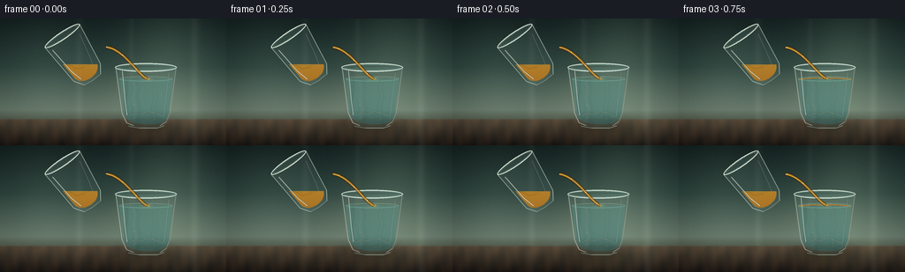
展开代码变化
--- 上一保存版本
+++ 本次保存版本
@@ -471,6 +471,31 @@
return base, (166.5, impact_y)
+SOURCE_CENTER = (86.0, 43.0)
+
+
+def source_x(x):
+ return SOURCE_CENTER[0] + (x - 90.0) * 1.08
+
+
+def source_y(y):
+ return y - 17.0
+
+
+def source_point(point):
+ return (source_x(point[0]), source_y(point[1]))
+
+
+def rotate_point(point, theta, center):
+ dx = point[0] - center[0]
+ dy = point[1] - center[1]
+ radians = math.radians(theta)
+ return (
+ center[0] + dx * math.cos(radians) - dy * math.sin(radians),
+ center[1] + dx * math.sin(radians) + dy * math.cos(radians),
+ )
+
+
def source_masks(theta):
outer_local = (
[(68.0, 32.0), (73.0, 82.0)]
@@ -484,15 +509,15 @@
+ bezier((90.0, 89.5), (97.5, 89.5), (102.0, 86.0), (103.8, 80.5), 14)
+ [(108.5, 34.5)]
)
- outer = polygon_mask(outer_local, blur=0.25)
- inner = polygon_mask(inner_local, blur=0.25)
+ outer = polygon_mask([source_point(point) for point in outer_local], blur=0.25)
+ inner = polygon_mask([source_point(point) for point in inner_local], blur=0.25)
rim = mask_from_draw(
lambda draw: draw.ellipse(
(
- round(68.0 * SCALE),
- round(27.5 * SCALE),
- round(112.0 * SCALE),
- round(36.5 * SCALE),
+ round(source_x(68.0) * SCALE),
+ round(source_y(27.5) * SCALE),
+ round(source_x(112.0) * SCALE),
+ round(source_y(36.5) * SCALE),
),
fill=255,
)
@@ -501,17 +526,18 @@
inner_rim = mask_from_draw(
lambda draw: draw.ellipse(
(
- round(71.0 * SCALE),
- round(29.0 * SCALE),
- round(109.0 * SCALE),
- round(35.0 * SCALE),
+ round(source_x(71.0) * SCALE),
+ round(source_y(29.0) * SCALE),
+ round(source_x(109.0) * SCALE),
+ round(source_y(35.0) * SCALE),
),
fill=255,
)
)
inner = union_masks(inner, inner_rim)
- outer = outer.rotate(theta, resample=Image.Resampling.BICUBIC, center=(90 * SCALE, 60 * SCALE))
- inner = inner.rotate(theta, resample=Image.Resampling.BICUBIC, center=(90 * SCALE, 60 * SCALE))
+ center = (round(SOURCE_CENTER[0] * SCALE), round(SOURCE_CENTER[1] * SCALE))
+ outer = outer.rotate(theta, resample=Image.Resampling.BICUBIC, center=center)
+ inner = inner.rotate(theta, resample=Image.Resampling.BICUBIC, center=center)
return outer, inner
@@ -529,7 +555,11 @@
oil_detail = Image.new("RGBA", (WW, HH), (0, 0, 0, 0))
oil_detail = draw_soft_line(
oil_detail,
- [(78, oil_surface_y + 0.4), (91, oil_surface_y + 0.15), (103, oil_surface_y + 0.55)],
+ [
+ (source_x(78), oil_surface_y + 0.4),
+ (source_x(91), oil_surface_y + 0.15),
+ (source_x(103), oil_surface_y + 0.55),
+ ],
(255, 219, 111),
1.0,
blur=0.35,
@@ -537,7 +567,12 @@
)
oil_detail = draw_soft_line(
oil_detail,
- [(75, 72), (82, 69), (90, 74), (99, 72)],
+ [
+ (source_x(75), source_y(72)),
+ (source_x(82), source_y(69)),
+ (source_x(90), source_y(74)),
+ (source_x(99), source_y(72)),
+ ],
(255, 165, 35),
0.7,
blur=0.6,
@@ -551,23 +586,35 @@
glass_layer = Image.new("RGBA", (WW, HH), (0, 0, 0, 0))
glass_layer = draw_soft_line(
glass_layer,
- [(68.0, 32.0), (73.0, 82.0), (80.0, 92.0), (90.0, 93.0), (101.0, 92.0), (107.0, 82.0), (112.0, 32.0)],
+ [
+ source_point((68.0, 32.0)),
+ source_point((73.0, 82.0)),
+ source_point((80.0, 92.0)),
+ source_point((90.0, 93.0)),
+ source_point((101.0, 92.0)),
+ source_point((107.0, 82.0)),
+ source_point((112.0, 32.0)),
+ ],
(218, 238, 226),
1.0,
blur=0.26,
alpha=182,
)
- glass_layer = glass_layer.rotate(theta, resample=Image.Resampling.BICUBIC, center=(90 * SCALE, 60 * SCALE))
+ glass_layer = glass_layer.rotate(
+ theta,
+ resample=Image.Resampling.BICUBIC,
+ center=(round(SOURCE_CENTER[0] * SCALE), round(SOURCE_CENTER[1] * SCALE)),
+ )
base = Image.alpha_composite(base, glass_layer)
rim_layer = Image.new("RGBA", (WW, HH), (0, 0, 0, 0))
draw = ImageDraw.Draw(rim_layer)
draw.ellipse(
(
- round(68.0 * SCALE),
- round(27.5 * SCALE),
- round(112.0 * SCALE),
- round(36.5 * SCALE),
+ round(source_x(68.0) * SCALE),
+ round(source_y(27.5) * SCALE),
+ round(source_x(112.0) * SCALE),
+ round(source_y(36.5) * SCALE),
),
fill=(149, 184, 172, 14),
outline=(235, 247, 235, 214),
@@ -575,21 +622,29 @@
)
draw.ellipse(
(
- round(71.0 * SCALE),
- round(29.0 * SCALE),
- round(109.0 * SCALE),
- round(35.0 * SCALE),
+ round(source_x(71.0) * SCALE),
+ round(source_y(29.0) * SCALE),
+ round(source_x(109.0) * SCALE),
+ round(source_y(35.0) * SCALE),
),
outline=(119, 159, 151, 130),
width=round(0.55 * SCALE),
)
- rim_layer = rim_layer.rotate(theta, resample=Image.Resampling.BICUBIC, center=(90 * SCALE, 60 * SCALE))
+ rim_layer = rim_layer.rotate(
+ theta,
+ resample=Image.Resampling.BICUBIC,
+ center=(round(SOURCE_CENTER[0] * SCALE), round(SOURCE_CENTER[1] * SCALE)),
+ )
base = Image.alpha_composite(base, rim_layer)
highlight = Image.new("RGBA", (WW, HH), (0, 0, 0, 0))
highlight = draw_soft_line(
highlight,
- [(73.0, 39.0), (77.0, 71.0), (81.0, 85.0)],
+ [
+ source_point((73.0, 39.0)),
+ source_point((77.0, 71.0)),
+ source_point((81.0, 85.0)),
+ ],
(247, 255, 241),
1.35,
blur=0.32,
@@ -597,31 +652,39 @@
)
highlight = draw_soft_line(
highlight,
- [(106.3, 41.0), (101.6, 69.0), (99.0, 81.0)],
+ [
+ source_point((106.3, 41.0)),
+ source_point((101.6, 69.0)),
+ source_point((99.0, 81.0)),
+ ],
(237, 250, 237),
0.65,
blur=0.32,
alpha=112,
)
# A moving glint near the pouring lip sells the flow.
- glint_x = mix(108.0, 111.0, 0.5 + 0.5 * math.sin(flow_phase * 2 * math.pi))
+ glint_x = mix(source_x(108.0), source_x(111.0), 0.5 + 0.5 * math.sin(flow_phase * 2 * math.pi))
highlight = draw_soft_line(
highlight,
- [(glint_x - 2.2, 31.2), (glint_x, 32.1), (glint_x + 2.4, 31.4)],
+ [
+ (glint_x - 2.2, source_y(31.2)),
+ (glint_x, source_y(32.1)),
+ (glint_x + 2.4, source_y(31.4)),
+ ],
(255, 247, 214),
0.55,
blur=0.25,
alpha=190,
)
- highlight = highlight.rotate(theta, resample=Image.Resampling.BICUBIC, center=(90 * SCALE, 60 * SCALE))
+ highlight = highlight.rotate(
+ theta,
+ resample=Image.Resampling.BICUBIC,
+ center=(round(SOURCE_CENTER[0] * SCALE), round(SOURCE_CENTER[1] * SCALE)),
+ )
base = Image.alpha_composite(base, highlight)
- lip_local = (111.0, 32.0)
- rad = math.radians(theta)
- lip = (
- 90.0 + lip_local[0] * math.cos(rad) + (60.0 - lip_local[1]) * math.sin(rad),
- 60.0 + lip_local[0] * math.sin(rad) - (60.0 - lip_local[1]) * math.cos(rad),
- )
+ lip_local = source_point((111.0, 32.0))
+ lip = rotate_point(lip_local, theta, SOURCE_CENTER)
return base, lip
候选 03播放与检查图
点击播放 · 原生 RGB 像素

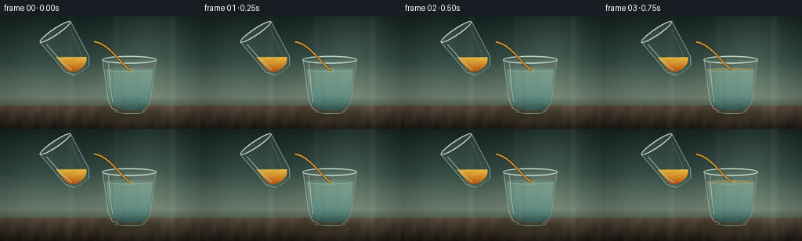
展开代码变化
--- 上一保存版本
+++ 本次保存版本
@@ -99,6 +99,25 @@
return Image.alpha_composite(base, layer)
+def fill_local_gradient(base, mask, top_color, bottom_color, top_alpha=255, bottom_alpha=255):
+ """Fill a mask with a gradient normalized to the mask's own vertical extent."""
+ mask_array = np.asarray(mask, dtype=np.float32) / 255.0
+ bbox = mask.getbbox()
+ if bbox is None:
+ return base
+ left, top, right, bottom = bbox
+ local_y = np.linspace(0.0, 1.0, HH, dtype=np.float32)[:, None]
+ local_y = np.clip((local_y * HH - top) / max(bottom - top, 1), 0.0, 1.0)
+ rgb = np.empty((HH, WW, 3), dtype=np.float32)
+ for channel in range(3):
+ rgb[:, :, channel] = mix(float(top_color[channel]), float(bottom_color[channel]), local_y)
+ alpha = top_alpha + (bottom_alpha - top_alpha) * local_y
+ alpha = np.broadcast_to(alpha, (HH, WW)) * mask_array
+ layer_array = np.dstack([np.clip(rgb, 0, 255), np.clip(alpha, 0, 255)])
+ layer = Image.fromarray(layer_array.astype(np.uint8), "RGBA")
+ return Image.alpha_composite(base, layer)
+
+
def screen_blend(base, layer, opacity=1.0):
a = np.asarray(base.convert("RGB"), dtype=np.float32) / 255.0
b = np.asarray(layer.convert("RGB"), dtype=np.float32) / 255.0
@@ -268,14 +287,14 @@
base = fill_mask(base, reflection, (113, 88, 53), 38)
# The glass body is mostly transparent, with a cool edge-to-edge tint.
- base = fill_gradient(base, body_mask, (190, 224, 215), (88, 133, 126), 23, 34)
+ base = fill_local_gradient(base, body_mask, (207, 235, 225), (84, 127, 120), 24, 39)
# Water: clear at the top, deeper teal toward the base.
water_cut = mask_from_draw(
lambda draw: draw.rectangle((0, 0, WW, round(68.0 * SCALE)), fill=255)
)
water_mask = subtract_mask(inner_body, water_cut)
- base = fill_gradient(base, water_mask, (134, 199, 183), (26, 90, 94), 68, 126)
+ base = fill_local_gradient(base, water_mask, (155, 214, 198), (33, 101, 104), 86, 151)
# Refracted window bands and a distorted table edge inside the water.
water_layer = Image.new("RGBA", (WW, HH), (0, 0, 0, 0))
@@ -320,7 +339,7 @@
oil_polygon = top_curve + list(reversed(bottom_curve))
oil_mask = intersect_masks(polygon_mask(oil_polygon, blur=0.28), inner_body)
if oil_top < 67.4:
- base = fill_gradient(base, oil_mask, (252, 187, 57), (149, 67, 11), 190, 226)
+ base = fill_local_gradient(base, oil_mask, (255, 203, 68), (185, 82, 12), 225, 246)
# Warm internal caustic and the thin bright oil surface.
oil_layer = Image.new("RGBA", (WW, HH), (0, 0, 0, 0))
@@ -543,14 +562,14 @@
def add_source_glass(base, theta, oil_surface_y, flow_phase):
outer_mask, inner_mask = source_masks(theta)
- base = fill_gradient(base, outer_mask, (189, 223, 213), (69, 115, 109), 20, 31)
+ base = fill_local_gradient(base, outer_mask, (202, 231, 220), (72, 117, 111), 22, 34)
# Oil is clipped to the tilted glass but keeps a level, world-horizontal surface.
surface_cut = mask_from_draw(
lambda draw: draw.rectangle((0, 0, WW, round(oil_surface_y * SCALE)), fill=255)
)
oil_mask = subtract_mask(inner_mask, surface_cut)
- base = fill_gradient(base, oil_mask, (247, 181, 48), (126, 56, 10), 200, 230)
+ base = fill_local_gradient(base, oil_mask, (255, 201, 65), (177, 76, 9), 230, 248)
oil_detail = Image.new("RGBA", (WW, HH), (0, 0, 0, 0))
oil_detail = draw_soft_line(
候选 04播放与检查图
点击播放 · 原生 RGB 像素
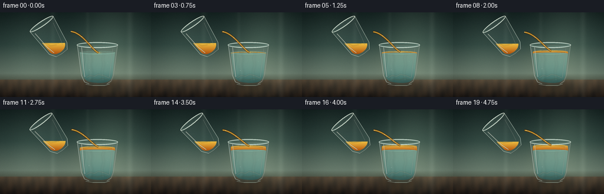
展开代码变化
--- 上一保存版本
+++ 本次保存版本
@@ -251,21 +251,21 @@
def lower_glass_outer_points():
return (
- [(130.0, 55.0), (137.0, 107.0)]
- + bezier((137.0, 107.0), (139.0, 116.0), (144.0, 121.0), (151.0, 122.0), 14)
- + bezier((151.0, 122.0), (161.0, 125.0), (179.0, 125.0), (184.0, 122.0), 14)
- + bezier((184.0, 122.0), (190.0, 119.0), (192.0, 114.0), (193.0, 107.0), 14)
- + [(200.0, 55.0)]
+ [(126.0, 51.0), (133.0, 106.0)]
+ + bezier((133.0, 106.0), (136.0, 116.0), (142.0, 121.0), (150.0, 122.0), 14)
+ + bezier((150.0, 122.0), (162.0, 125.0), (181.0, 125.0), (187.0, 122.0), 14)
+ + bezier((187.0, 122.0), (194.0, 119.0), (197.0, 114.0), (198.0, 106.0), 14)
+ + [(204.0, 51.0)]
)
def lower_glass_inner_points():
return (
- [(134.0, 59.0), (140.5, 106.0)]
- + bezier((140.5, 106.0), (142.5, 113.0), (146.5, 117.0), (152.0, 118.0), 14)
- + bezier((152.0, 118.0), (161.0, 120.5), (177.0, 120.5), (182.0, 118.0), 14)
- + bezier((182.0, 118.0), (187.5, 116.0), (189.5, 111.5), (190.5, 106.0), 14)
- + [(196.0, 59.0)]
+ [(130.5, 55.5), (136.8, 105.0)]
+ + bezier((136.8, 105.0), (139.5, 113.0), (144.5, 117.0), (151.0, 118.0), 14)
+ + bezier((151.0, 118.0), (162.0, 120.5), (179.0, 120.5), (185.0, 118.0), 14)
+ + bezier((185.0, 118.0), (191.5, 116.0), (194.5, 111.5), (195.8, 105.0), 14)
+ + [(201.0, 55.5)]
)
@@ -291,7 +291,7 @@
# Water: clear at the top, deeper teal toward the base.
water_cut = mask_from_draw(
- lambda draw: draw.rectangle((0, 0, WW, round(68.0 * SCALE)), fill=255)
+ lambda draw: draw.rectangle((0, 0, WW, round(67.0 * SCALE)), fill=255)
)
water_mask = subtract_mask(inner_body, water_cut)
base = fill_local_gradient(base, water_mask, (155, 214, 198), (33, 101, 104), 86, 151)
@@ -327,15 +327,15 @@
base = Image.alpha_composite(base, clipped)
# A thin, bright waterline remains visible around the growing oil lens.
- base = draw_ellipse(base, (165.0, 68.4), (30.0, 2.7), outline=(151, 220, 203), width=0.75, alpha=92)
+ base = draw_ellipse(base, (165.0, 67.6), (32.0, 2.7), outline=(170, 231, 211), width=0.75, alpha=105)
# Oil floats above the fixed water interface. Its upper ellipse rises over time.
- interface_y = 69.0
- oil_top_y = max(59.9, oil_top)
+ interface_y = 68.1
+ oil_top_y = max(58.7, oil_top - 1.2)
surface_ry = 2.4
surface_center = oil_top_y + surface_ry
- top_curve = cubic_ellipse_top(165.0, surface_center, 29.5, surface_ry, 90)
- bottom_curve = cubic_ellipse_top(165.0, interface_y + 1.0, 30.2, 2.0, 90)
+ top_curve = cubic_ellipse_top(165.0, surface_center, 31.8, surface_ry, 90)
+ bottom_curve = cubic_ellipse_top(165.0, interface_y + 1.0, 32.5, 2.0, 90)
oil_polygon = top_curve + list(reversed(bottom_curve))
oil_mask = intersect_masks(polygon_mask(oil_polygon, blur=0.28), inner_body)
if oil_top < 67.4:
@@ -345,7 +345,7 @@
oil_layer = Image.new("RGBA", (WW, HH), (0, 0, 0, 0))
oil_layer = draw_soft_line(
oil_layer,
- [(141, oil_top_y + 3.0), (151, oil_top_y + 1.3), (166, oil_top_y + 0.8), (181, oil_top_y + 1.6), (189, oil_top_y + 3.4)],
+ [(138, oil_top_y + 3.0), (150, oil_top_y + 1.3), (166, oil_top_y + 0.8), (182, oil_top_y + 1.6), (192, oil_top_y + 3.4)],
(255, 215, 111),
1.05,
blur=0.35,
@@ -353,7 +353,7 @@
)
oil_layer = draw_soft_line(
oil_layer,
- [(143, interface_y + 0.3), (155, interface_y + 1.2), (168, interface_y + 1.0), (185, interface_y + 0.2)],
+ [(140, interface_y + 0.3), (154, interface_y + 1.2), (169, interface_y + 1.0), (189, interface_y + 0.2)],
(255, 172, 42),
0.9,
blur=0.65,
@@ -366,7 +366,7 @@
# Small specular break on the elliptical top surface.
base = draw_soft_line(
base,
- [(150, oil_top_y + 1.1), (158, oil_top_y + 0.55), (168, oil_top_y + 0.6)],
+ [(148, oil_top_y + 1.1), (158, oil_top_y + 0.55), (169, oil_top_y + 0.6)],
(255, 242, 190),
0.65,
blur=0.28,
@@ -382,13 +382,13 @@
if alpha > 3:
base = draw_ellipse(
base,
- (166.5, impact_y),
+ (167.0, impact_y),
(radius, 0.65 + radius * 0.16),
outline=(255, 218, 114),
width=0.55,
alpha=alpha,
)
- base = draw_ellipse(base, (166.5, impact_y), (3.1, 1.0), fill=(255, 206, 88), alpha=115, blur=0.25)
+ base = draw_ellipse(base, (167.0, impact_y), (3.1, 1.0), fill=(255, 206, 88), alpha=115, blur=0.25)
# Caustics at the bottom of the water glass.
caustic_layer = Image.new("RGBA", (WW, HH), (0, 0, 0, 0))
@@ -417,10 +417,10 @@
draw = ImageDraw.Draw(rim_layer)
draw.ellipse(
(
- round(130.0 * SCALE),
- round(50.5 * SCALE),
- round(200.0 * SCALE),
- round(60.5 * SCALE),
+ round(126.0 * SCALE),
+ round(46.5 * SCALE),
+ round(204.0 * SCALE),
+ round(56.5 * SCALE),
),
fill=(126, 172, 163, 18),
outline=(222, 239, 229, 205),
@@ -428,10 +428,10 @@
)
draw.ellipse(
(
- round(134.0 * SCALE),
- round(52.4 * SCALE),
- round(196.0 * SCALE),
- round(58.7 * SCALE),
+ round(130.0 * SCALE),
+ round(48.4 * SCALE),
+ round(200.0 * SCALE),
+ round(54.7 * SCALE),
),
outline=(103, 151, 144, 125),
width=round(0.65 * SCALE),
@@ -441,7 +441,7 @@
edge_layer = Image.new("RGBA", (WW, HH), (0, 0, 0, 0))
edge_layer = draw_soft_line(
edge_layer,
- [(131.1, 56.0), (137.8, 106.8), (143.0, 118.2), (151.0, 121.4)],
+ [(127.1, 52.0), (133.8, 105.8), (139.0, 118.2), (150.0, 121.4)],
(230, 247, 235),
0.9,
blur=0.28,
@@ -449,7 +449,7 @@
)
edge_layer = draw_soft_line(
edge_layer,
- [(199.0, 56.0), (192.3, 106.8), (188.0, 117.0), (181.0, 121.8)],
+ [(203.0, 52.0), (197.3, 105.8), (193.0, 117.0), (184.0, 121.8)],
(232, 244, 230),
0.85,
blur=0.26,
@@ -457,7 +457,7 @@
)
edge_layer = draw_soft_line(
edge_layer,
- [(138.2, 59.0), (141.6, 94.0), (143.8, 110.0)],
+ [(134.2, 55.0), (137.6, 94.0), (139.8, 110.0)],
(246, 255, 243),
1.25,
blur=0.34,
@@ -465,7 +465,7 @@
)
edge_layer = draw_soft_line(
edge_layer,
- [(191.3, 61.0), (187.5, 91.0), (185.3, 111.0)],
+ [(196.3, 57.0), (192.5, 91.0), (190.3, 111.0)],
(237, 250, 236),
0.65,
blur=0.30,
@@ -473,7 +473,7 @@
)
edge_layer = draw_soft_line(
edge_layer,
- [(145, 122.0), (157, 124.3), (178, 124.2), (186, 121.4)],
+ [(142, 122.0), (157, 124.3), (180, 124.2), (189, 121.4)],
(211, 235, 219),
1.05,
blur=0.28,
@@ -487,7 +487,7 @@
drift = 1.8 * math.sin(impact_phase * 2 * math.pi + index * 2.1)
base = draw_ellipse(base, (bx + drift * 0.25, by + drift), (radius, radius), outline=(217, 244, 230), width=0.35, alpha=95)
base = draw_ellipse(base, (bx + drift * 0.25 - 0.12, by + drift - 0.12), (radius * 0.22, radius * 0.22), fill=(255, 255, 240), alpha=135)
- return base, (166.5, impact_y)
+ return base, (167.0, impact_y)
SOURCE_CENTER = (86.0, 43.0)
候选 05播放与检查图
可观测工具轨迹
实际执行的命令与返回图片。
命令 1exit 0
/bin/bash -c "pwd && rg --files -g 'prompt.txt' -g 'GENERATION_RULES.md' -g 'task_spec.json' -g '"'!*.mp4'"' -g '"'!*.webm'"' | sort"
命令 2exit 0
/bin/bash -c 'ls -la'
命令 3exit 0
/bin/bash -c 'git status --short --branch'
命令 4exit 0
/bin/bash -c 'cat prompt.txt'
命令 5exit 0
/bin/bash -c 'cat GENERATION_RULES.md'
命令 6exit 0
/bin/bash -c 'cat task_spec.json'
命令 7exit 0
/bin/bash -c "sed -n '1,240p' artifact_io.py"
命令 8exit 0
/bin/bash -c "python - <<'PY'
import numpy, PIL
from PIL import Image, ImageDraw, ImageFilter
print('numpy', numpy.__version__)
print('PIL', PIL.__version__)
print('filters', hasattr(ImageFilter, 'GaussianBlur'))
PY"命令 9exit 0
/bin/bash -c 'command -v ffmpeg || true; command -v python; python --version'
命令 10exit 0
/bin/bash -c "sed -n '1,260p' player_template.html"
命令 11exit 1
/bin/bash -c 'python generate.py'
命令 12exit 0
/bin/bash -c 'python -W ignore generate.py'
命令 13exit 0
/bin/bash -c "python - <<'PY'
from PIL import Image
for n in (0,10,19):
im=Image.open(f'frames/{n:02d}.png')
im.crop((40,18,128,112)).resize((440,470),Image.Resampling.NEAREST).save(f'.tmp/source_{n:02d}.png')
PY"命令 14exit 0
/bin/bash -c "python - <<'PY' import generate as g import math for th in (34,39): print(th,g.add_source_glass(g.make_background(0),th,52,0)[1]) PY"
命令 15exit 0
/bin/bash -c 'mkdir -p .tmp/candidate_v1 && cp -a frames inspection.png transition_check.png pixels.npz index.html .tmp/candidate_v1/'
命令 16exit 0
/bin/bash -c "nl -ba generate.py | sed -n '480,585p'"
命令 17exit 0
/bin/bash -c "python - <<'PY' from PIL import Image import generate as g for th in (-34,34): m=g.source_masks(th)[0] print(th,m.getbbox()) # alpha bbox per row top PY"
命令 18exit 0
/bin/bash -c "python - <<'PY'
import generate as g
from PIL import Image
for th in (-50,-35,-25,25,35,50):
m=g.source_masks(th)[0]
# row with max x in top 20%
a=__import__('numpy').asarray(m)
top=a[:int(a.shape[0]*.3)]
ys,xs=__import__('numpy').where(top>128)
print(th, 'bbox',m.getbbox(), 'top extrema', (xs.min()/4,ys.min()/4,xs.max()/4,ys.max()/4))
PY"命令 19exit 0
/bin/bash -c "python -W ignore - <<'PY' import generate as g for th in (18,26,34): print(th,g.add_source_glass(g.make_background(0),th,49,0)[1]) PY"
命令 20exit 0
/bin/bash -c 'python -W ignore generate.py'
命令 21exit 0
/bin/bash -c "python - <<'PY'
import generate as g
from PIL import Image
import numpy as np
for th in (34,39):
o,i=g.source_masks(th)
cut=g.mask_from_draw(lambda d:d.rectangle((0,0,g.WW,round(49*g.SCALE)),fill=255))
oil=g.subtract_mask(i,cut)
print('theta',th,'outer',o.getbbox(),'inner',i.getbbox(),'oil',oil.getbbox(),'oil pixels',(np.asarray(oil)>128).sum())
print('outer center',np.asarray(o)[60*4:61*4,80*4:81*4].mean(),'inner',np.asarray(i)[60*4:61*4,80*4:81*4].mean(),'oil',np.asarray(oil)[60*4:61*4,80*4:81*4].mean())
PY"命令 22exit 1
/bin/bash -c "python - <<'PY'
import generate as g
from PIL import Image
base=g.make_background(10)
b=g.fill_gradient(base,*g.source_masks(39),(247,181,48),(126,56,10),200,230)
b.resize((1024,576)).save('.tmp/mask_test.png')
PY"命令 23exit 0
/bin/bash -c "python - <<'PY'
import generate as g
base=g.make_background(10)
b=g.fill_gradient(base,g.source_masks(39)[0],(247,181,48),(126,56,10),200,230)
b.resize((1024,576)).save('.tmp/mask_test.png')
PY"命令 24exit 0
/bin/bash -c "python - <<'PY'
import generate as g
from PIL import Image
base=g.make_background(10)
outer,inner=g.source_masks(39)
oil=g.subtract_mask(inner,g.mask_from_draw(lambda d:d.rectangle((0,0,g.WW,round(49*g.SCALE)),fill=255)))
b=g.fill_gradient(base,outer,(189,223,213),(69,115,109),20,31)
b=g.fill_gradient(b,oil,(247,181,48),(126,56,10),200,230)
b.resize((1024,576)).save('.tmp/mask_test2.png')
PY"命令 25exit 0
/bin/bash -c "python - <<'PY'
import generate as g
for th in (34,39):
o,i=g.source_masks(th)
print(th,o.size)
print('sample x y alpha')
for x,y in [(105,50),(100,55),(95,60),(85,60),(90,40),(80,60)]:
print(x,y,g.Image.Image.open if False else __import__('numpy').asarray(o)[y*4,x*4])
PY"命令 26exit 0
/bin/bash -c "python - <<'PY'
import generate as g
import numpy as np
base=g.make_background(10)
b=g.fill_gradient(base,g.source_masks(39)[0],(247,181,48),(126,56,10),200,230)
a=np.asarray(b.convert('RGB'))
print(a[240,400],a[240,300],a[240,200],a[160,400])
PY"命令 27exit 0
/bin/bash -c "python - <<'PY' import generate as g import numpy as np m=g.source_masks(39)[0] a=np.asarray(m) ys,xs=np.where(a>128) print(xs.min(),xs.max(),ys.min(),ys.max(),xs.mean(),ys.mean()) for y in (60,100,150,200,240,280,320): row=np.where(a[y]>128)[0] print(y, (row.min()/4,row.max()/4) if len(row) else None) PY"
命令 28exit 0
/bin/bash -c "python - <<'PY'
import generate as g
import numpy as np
o,i=g.source_masks(39)
cut=g.mask_from_draw(lambda d:d.rectangle((0,0,g.WW,round(49*g.SCALE)),fill=255))
oil=g.subtract_mask(i,cut)
base=g.make_background(10)
for name,mask in [('outer',o),('inner',i),('oil',oil)]:
b=g.fill_mask(base,mask,(255,0,0),255)
b.resize((1024,576)).save(f'.tmp/{name}_mask.png')
print(name,(np.asarray(mask)>128).sum())
PY"命令 29exit 0
/bin/bash -c "python -W ignore - <<'PY'
import generate as g
im=g.add_source_glass(g.make_background(10),39,49,0)[0]
im.resize((1024,576)).save('.tmp/source_new.png')
PY"命令 30exit 0
/bin/bash -c 'python -W ignore generate.py'
命令 31exit 0
/bin/bash -c "python - <<'PY'
from PIL import Image
im=Image.open('frames/00.png')
im.crop((120,48,208,130)).resize((616,574),Image.Resampling.NEAREST).save('.tmp/lower00.png')
PY"命令 32exit 0
/bin/bash -c "python -W ignore - <<'PY'
import generate as g
from PIL import Image
im=g.render_frame(19)
Image.fromarray(im).resize((1024,576)).save('.tmp/frame19_v4.png')
PY"命令 33exit 0
/bin/bash -c "python -W ignore - <<'PY'
import generate as g
from PIL import Image
im=g.render_frame(0)
Image.fromarray(im).resize((1024,576)).save('.tmp/frame00_v4.png')
PY"命令 34exit 0
/bin/bash -c 'python -W ignore generate.py'
命令 35exit 0
/bin/bash -c "python - <<'PY'
from pathlib import Path
import json, numpy as np
from PIL import Image
spec=json.loads(Path('task_spec.json').read_text())
p=np.load('pixels.npz')['pixels']
print('pixels',p.shape,p.dtype)
print('expected',(spec['height'],spec['width'],spec['frames']))
files=sorted(Path('frames').glob('*.png'))
print('frame files',len(files),files[0].name,files[-1].name)
print('frame sizes',set(Image.open(f).size for f in files))
arr=np.stack([np.asarray(Image.open(f).convert('RGB')) for f in files])
print('array',arr.shape,arr.dtype,'range',arr.min(),arr.max())
diff=np.abs(arr[1:].astype(np.int16)-arr[:-1].astype(np.int16))
print('temporal mean abs',round(float(diff.mean()),3),'max',int(diff.max()))
print('unique colors/frame min',min(len(np.unique(a.reshape(-1,3),axis=0)) for a in arr))
print('html bytes',Path('index.html').stat().st_size)
print('generate.py bytes',Path('generate.py').stat().st_size)
PY"命令 36exit 0
/bin/bash -c "python - <<'PY'
import json,base64
from pathlib import Path
import numpy as np
from PIL import Image
html=Path('index.html').read_text()
start=html.index('const DATA=')+len('const DATA=')
end=html.index(',W=DATA.width',start)
data=json.loads(html[start:end])
first=np.frombuffer(base64.b64decode(data['first']),dtype='<u4').reshape(144,256)
frame=np.stack([(first>>16)&255,(first>>8)&255,first&255],axis=-1).astype(np.uint8)
ref=np.asarray(Image.open('frames/00.png').convert('RGB'))
print('html first matches frame 00:',np.array_equal(frame,ref))
print('deltas:',len(data['deltas']),'caption:',data['caption'])
PY"命令 37exit 0
/bin/bash -c 'python -m py_compile generate.py artifact_io.py && git status --short -- .'
命令 38exit 0
/bin/bash -c 'git status --short --untracked-files=all -- . | head -80'
命令 39exit 0
/bin/bash -c 'git check-ignore -v generate.py frames/00.png index.html pixels.npz inspection.png || true'
命令 40exit 0
/bin/bash -c 'ls -lh generate.py index.html pixels.npz inspection.png transition_check.png frames/00.png frames/19.png && du -sh frames'
命令 41exit 0
/bin/bash -c "rg -n \"fill_gradient|screen_blend|clamp\\(|SOURCE_CENTER\" generate.py | head -40"
命令 42exit 0
/bin/bash -c 'find .tmp/candidate_v1 -maxdepth 2 -type f | wc -l'
命令 43exit 0
/bin/bash -c "python - <<'PY'
from pathlib import Path
import numpy as np
from PIL import Image
# Verify all outputs come from one exact final render and every frame is nonblank.
files=sorted(Path('frames').glob('[0-9][0-9].png'))
arrays=[np.asarray(Image.open(f).convert('RGB')) for f in files]
print('all finite uint8:', all(a.dtype==np.uint8 and a.shape==(144,256,3) for a in arrays))
print('frame std-dev minimum:', round(min(float(a.std()) for a in arrays),2))
print('mean frame difference:', round(float(np.mean([np.abs(arrays[i+1].astype(float)-arrays[i]).mean() for i in range(19)])),3))
PY"命令 44exit 0
/bin/bash -c 'find __pycache__ -type f -delete 2>/dev/null; rmdir __pycache__ 2>/dev/null || true'
命令 45exit 0
/bin/bash -c "ls -la | sed -n '1,80p'"
命令 46exit 0
/bin/bash -c "python - <<'PY'
from pathlib import Path
import numpy as np
from PIL import Image
# Compare the stable glass body and quantify that motion is concentrated in liquids/stream.
arr=np.stack([np.asarray(Image.open(p).convert('RGB')) for p in sorted(Path('frames').glob('*.png'))])
d=np.abs(arr[-1].astype(np.int16)-arr[0].astype(np.int16))
print('first-last mean difference',round(float(d.mean()),2),'max',int(d.max()))
print('changed pixels >8',int((d.max(axis=2)>8).sum()))
PY"命令 47exit 0
/bin/bash -c "python - <<'PY'
import generate
print('import ok')
PY"命令 48exit 0
/bin/bash -c "find __pycache__ -type f -delete 2>/dev/null; rmdir __pycache__ 2>/dev/null || true; test -f index.html && test -f pixels.npz && test -f frames/19.png && echo 'required artifacts present'"
视觉工具实际返回图片 1
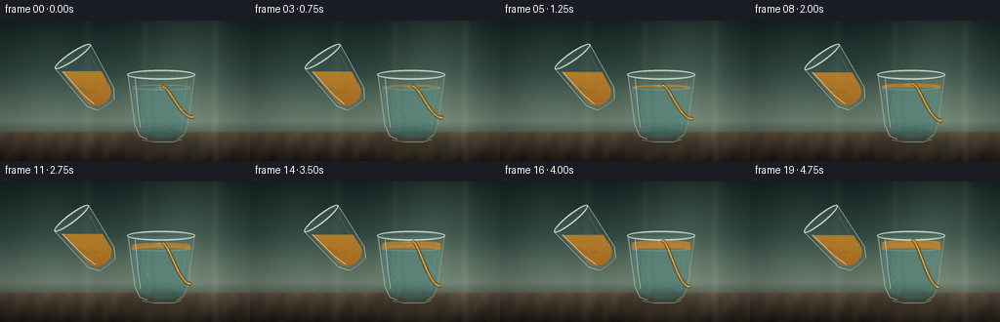
视觉工具实际返回图片 2
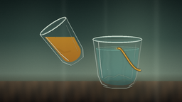
视觉工具实际返回图片 3
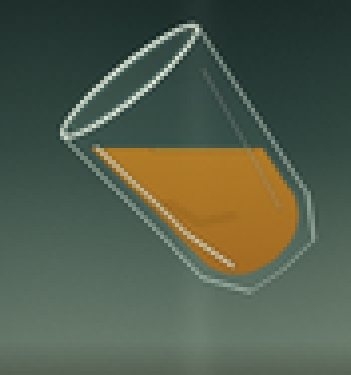
视觉工具实际返回图片 4
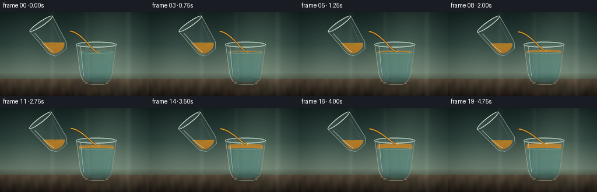
视觉工具实际返回图片 5
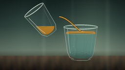
视觉工具实际返回图片 6
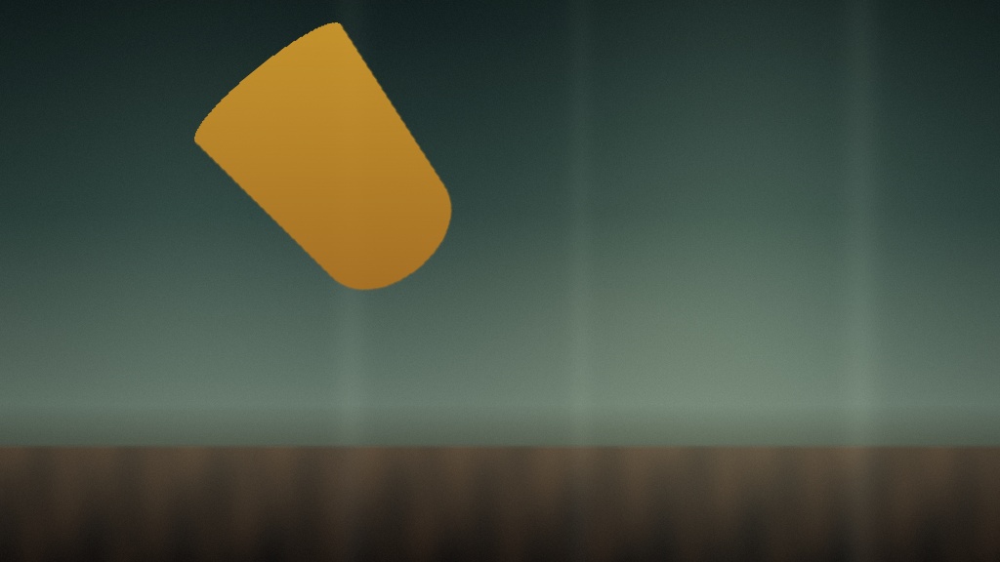
视觉工具实际返回图片 7
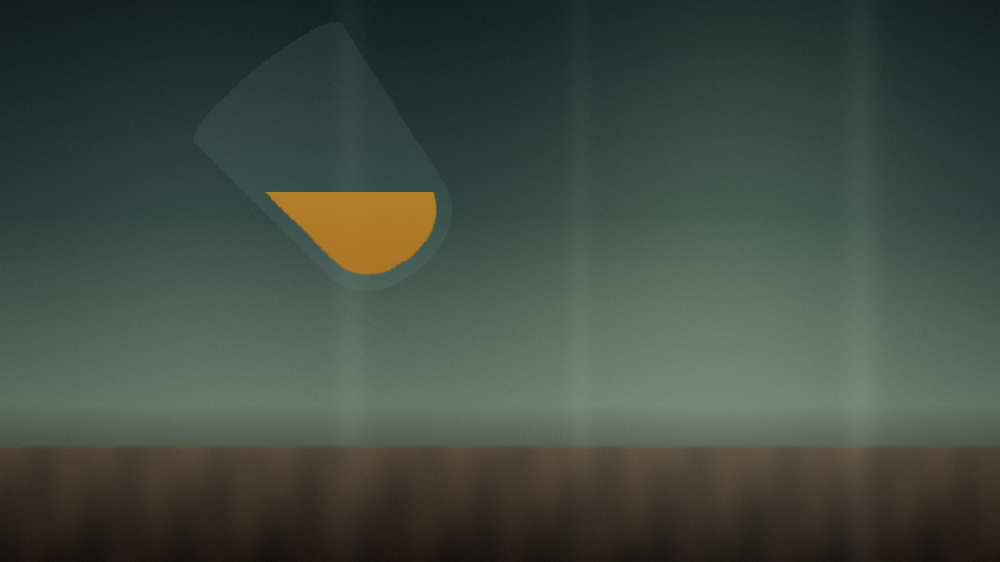
视觉工具实际返回图片 8
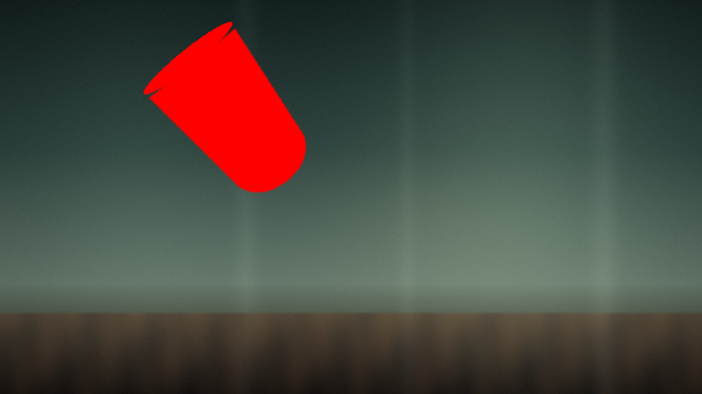
视觉工具实际返回图片 9
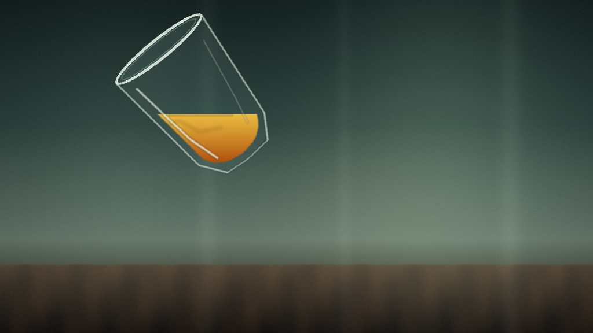
视觉工具实际返回图片 10

视觉工具实际返回图片 11
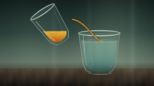
视觉工具实际返回图片 12
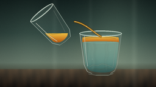
视觉工具实际返回图片 13

视觉工具实际返回图片 14
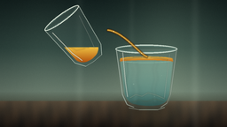
视觉工具实际返回图片 15
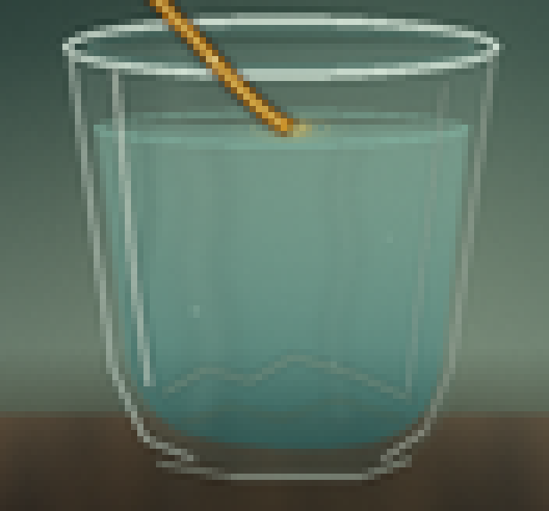
视觉工具实际返回图片 16
视觉工具实际返回图片 17
视觉工具实际返回图片 18

视觉工具实际返回图片 19

视觉工具实际返回图片 20
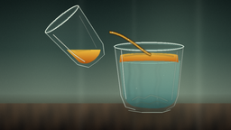
保存候选 5 份；完成命令 48 次；可验证图片返回 20 张。原始 API 响应与完整日志保留在本地。